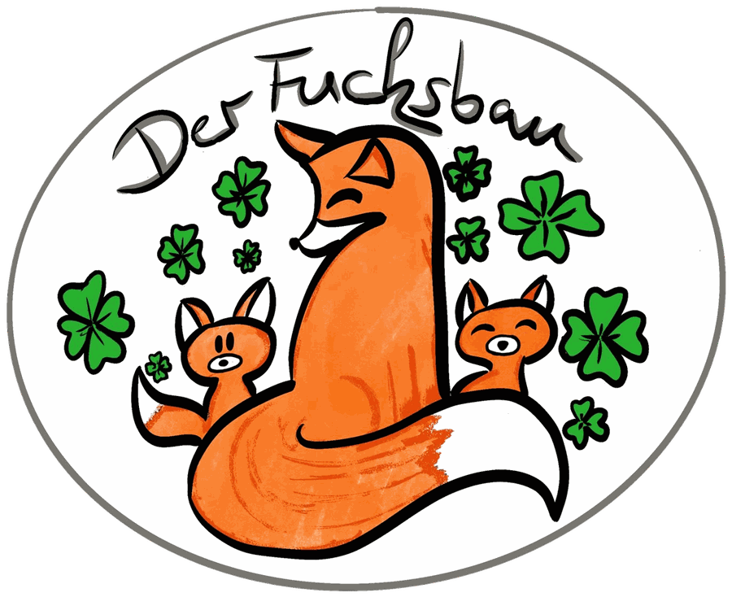

Ein Bau für kleine Füchse.
Der Fuchsbau ist eine Kindertagespflege für junge Kinder in Mücke. Die wichtigsten Antworten stehen hier. Alles Weitere beantworten wir persönlich auf WhatsApp, das Neueste zeigen wir auf Instagram.

Was ist der Fuchsbau?
Ich bin Katharina, und der Fuchsbau ist meine Kindertagespflege in Mücke, mit Pflegeerlaubnis und Zulassung des Jugendamts nach § 43 SGB VIII.
Von Montag bis Freitag, 7:45–14:45 Uhr, erleben wir gemeinsam täglich kleine Abenteuer und wundervolle Momente. Ob beim Spielen im Sandkasten, beim Entdecken der Natur oder bei kreativen Bastelprojekten: Bei uns steht das Wohl jedes einzelnen Kindes im Mittelpunkt.
In meiner kleinen, familiären Gruppe (Kinder von 0 bis 3 Jahren) hat jedes Kind die Möglichkeit, sich gehört, gesehen und geborgen zu fühlen. Hier darf gelacht, getobt, entdeckt und gekuschelt werden, in einem liebevollen Umfeld, das Geborgenheit und Vertrauen schenkt.
Ich arbeite bedürfnisorientiert und begleite die Kleinen mit viel Herz durch ihre ersten wichtigen Lebensjahre. Jeder Tag ist bei uns ein neues, kleines Abenteuer! Habt ihr Interesse oder Fragen? Meldet euch gerne.
Wo findet ihr uns?
Im Herrmannsbergweg 16 in 35325 Mücke, für Familien aus
Mücke und der Umgebung.
Auf Google Maps öffnen ↗
Gibt es freie Plätze?
Das ändert sich immer wieder. Fragt einfach kurz per WhatsApp nach, eine Nachricht genügt. Ihr bekommt eine persönliche Antwort.
Was gibt's Neues?
Das sagen Eltern
Noch Fragen?
Oder klassisch anrufen: 0162 7820602. Wir melden uns persönlich zurück.
Ihr kennt den Fuchsbau schon? Mit einer kurzen Bewertung auf Google ↗ helft ihr anderen Familien aus der Umgebung, uns zu finden.